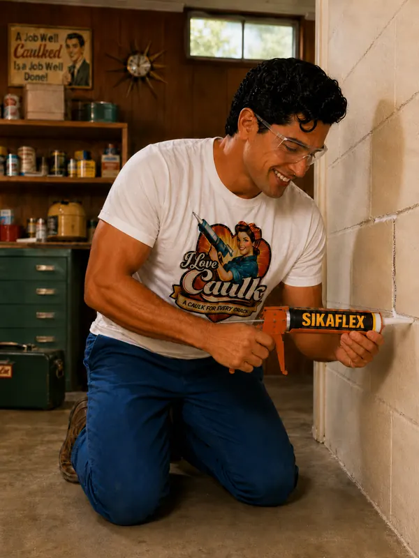

Actively leaking crack or hole
Water coming through right now? Hydraulic cement sets in minutes, even against running water.
It's rigid, so it can crack again if the wall moves.
Our pick: Quikrete Hydraulic Water-Stop Cement (Amazon)
Caulk by room
Going deep… below your house
The basement is where caulk faces its most Herculean challenge: hydrostatic pressure, efflorescence, freeze-thaw cycles, and the general ambitions of water to be somewhere it shouldn't. For active leaks, hydraulic cement goes in first. For cracks after the water's stopped, polyurethane crack fillers do the heavy lifting. For joints and penetrations, use a waterproofing-grade sealant.

Every joint in the room, what goes in it, and why. The color bar matches the formulation.
Water coming through right now? Hydraulic cement sets in minutes, even against running water.
It's rigid, so it can crack again if the wall moves.
Our pick: Quikrete Hydraulic Water-Stop Cement (Amazon)
Polyurethane sealant stays flexible and bonds to concrete. Leaky poured-wall cracks are often sealed with injection kits.
Our pick: Sikaflex-1a (Amazon)
Where a pipe passes through the foundation, seal it on the outside where you can and on the inside as backup.
Our pick: Sikaflex-1a (Amazon), Soudal Fix ALL
A big source of drafts. Seal gaps between the sill, the foundation, and the rim joist; foam works for the bigger ones.
Our pick: DAP Alex Plus (Amazon)
Many codes require fire-rated sealant or fireblocking where pipes and wires pass between floors.
Our pick: 3M Fire Barrier CP 25WB+
Seal the frame to the foundation, and keep the well clear so water drains away.
Our pick: Sikaflex-1a (Amazon)
Tubes worth a place in your cart for this room, and the joint each one suits. Price runs from $ (budget) to $$$ (pro grade).
| Product | Type | Best for | Why | Price | Buy |
|---|---|---|---|---|---|
| Quikrete Hydraulic Water-Stop Cement | Hydraulic cement | Actively leaking cracks | Sets in minutes, even with water running | $ | Check price on Amazon |
| Quikrete Polyurethane Concrete Crack Sealant | Polyurethane | Cracks in concrete, masonry, stucco | Self-leveling, flexible | $ | Check price on Amazon |
| DAP Concrete & Mortar Waterproof Filler | Acrylic latex | Minor wall cracks and gaps | Paintable, waterproof | $ | Check price on Amazon |
| Sikaflex Crack Fix | Polyurethane | Foundation crack repair | Can be injected into the crack | $$–$$$ | Check price on Amazon |
| RadonSeal DIY Foundation Crack Repair Kit | Polyurethane | Poured concrete walls | Blocks water and radon | $$ | Check price on Amazon |
| GE Advanced Silicone 2 Concrete | 100% silicone | Concrete, mortar and stone | 30-minute rain-ready, permanently flexible | $–$$ | Check price on Amazon |
| Drylok Masonry Crack Filler | Acrylic latex | Cracks in masonry walls and floors | Fast-setting, paintable in about an hour | $–$$ | Check price on Amazon |
Amazon links are affiliate links: if you buy through one, we may earn a small commission at no extra cost to you. It never decides what we recommend.
Hairline vertical shrinkage cracks are common. Horizontal cracks, stair-steps with displacement, or anything wider than about 1/4 inch or growing: call a structural engineer first.
Wire brush, vacuum, and scrub off efflorescence (the white chalky stuff).
Polyurethane won't stick to a wet crack. If it's leaking, plug it with hydraulic cement first.
Push rod into wider cracks so the sealant is the right depth.
Press polyurethane into the crack, tool it flat, and let it cure fully, which can take days in a cool basement.
Thin vertical cracks from concrete shrinkage are common and usually cosmetic. Horizontal cracks, bowing walls, cracks wider than about 1/4 inch, or cracks that grow are a job for a structural engineer.
Sealing helps, but the EPA says sealing alone hasn't been shown to lower radon significantly or consistently. Test, and use a proper mitigation system if levels are high.
Hydraulic cement for active leaks and holes; flexible sealant for dry cracks and joints that move.
More answers in the full FAQ, or let the Caulk Finder pick for you.